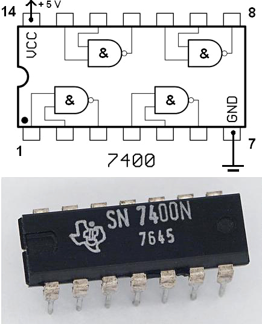

Jsou to základní stavební prvky digitálních zařízení. Tvořeny elektronickými součástami, které vykonávají logické operace na vstupních signálech podle předem definovaných pravidel. Tyto obvody jsou široce používány v počítačích, automatizaci, komunikačních systémech a mnoha dalších elektrotechnických zařízení.
Jedná se o základní prvek logických obodů, které provádějí základní logické operace podle Booleovy algebry. Typicky mají jeden nebo více vstupů a jediný výstup.
Vůbec nejzákladnějším logickým členem je opakovač, který pouze opakuje zadaný výstup.
| vstup (A) | výstup (X) |
|---|---|
| 0 | 0 |
| 1 | 1 |
Jelikož zadanou hodnotu nijak nemění využívá se k speciálním účelům - zpožďovač s velmi krátkým spožděním.
Využívá logické negace, platí, že výstup je opačný než vstup. Stejně jako opakovač ma jeden vstup a výstup.
| vstup (A) | výstup (X) |
|---|---|
| 0 | 1 |
| 1 | 0 |
Tento člen již využívá dvou vstupů. Provádí funkci logického součinu (konjukce) - výstup je 1 pouze tehdy, pokud jsou oba vstupy 1.
| Vstup(A) | Vstup(B) | Výstup(X) |
|---|---|---|
| 0 | 0 | 0 |
| 0 | 1 | 0 |
| 1 | 0 | 0 |
| 1 | 1 | 1 |
Provádí funkci logického součtu (disjunkce) - výstup je 1 , pokud je alespoň jeden vstup je 1.
| Vstup(A) | Vstup(B) | Výstup(X) |
|---|---|---|
| 0 | 0 | 0 |
| 0 | 1 | 1 |
| 1 | 0 | 1 |
| 1 | 1 | 1 |
Provadí funkci negovaného logického součinu (součet negací) - výstup je negací AND (výstup je 1 pouze tedhdy pokud jsou oba vstupy 0).
| Vstup(A) | Vstup(B) | Výstup(X) |
|---|---|---|
| 0 | 0 | 1 |
| 0 | 1 | 1 |
| 1 | 0 | 1 |
| 1 | 1 | 0 |
Provádí funkci negovaného logického součtu (součin negací) - výstup je negací OR hradla (výstup je 1 pouze tehdy, pokud jsou oba vstupy 0).
| Vstup(A) | Vstup(B) | Výstup(X) |
|---|---|---|
| 0 | 0 | 1 |
| 0 | 1 | 0 |
| 1 | 0 | 0 |
| 1 | 1 | 0 |
Vyčísluje exkluziví logický součet - výstup je 1 pouze tehdy, pokud je jeden vstup 1 a druhý 0.
| Vstup(A) | Vstup(B) | Výstup(X) |
|---|---|---|
| 0 | 0 | 0 |
| 0 | 1 | 1 |
| 1 | 0 | 1 |
| 1 | 1 | 0 |
Jedná se o negaci exkluzivního logického součtu (negovaný XOR) - výstup je 1, pokud jsou oba vstupy stejné.
| Vstup(A) | Vstup(B) | Výstup(X) |
|---|---|---|
| 0 | 0 | 1 |
| 0 | 1 | 0 |
| 1 | 0 | 0 |
| 1 | 1 | 1 |
Integrovaný obvod 7400 se 4 hradly NAND je vyrobený pomocí tranzistorů:

Logická hradla mohou být propojena do složitějších struktur. V praxi se využívají hlavně integrované logické obvody, které obsahují obrovské množství logických hradel.
Hradla můžeme kombinovat.
Například výstup AND jde do vstupu NOT a vznikne výsledek NAND
Většina nejpoužívanějších kombinací (NAND, NOR…) jsou už implementovány jako samostatné hradlo.
V složitějších obvodech je časté zapojovat hradla do rozlehlých logických obvodů.
Příklad jednoduššího obvodu: (A AND B) OR (C AND D)
| A | B | C | D | Výstup (X) |
|---|---|---|---|---|
| 0 | 0 | 0 | 0 | 0 |
| 1 | 0 | 0 | 0 | 0 |
| 0 | 1 | 0 | 0 | 0 |
| 0 | 0 | 1 | 0 | 0 |
| 0 | 0 | 0 | 1 | 0 |
| 1 | 0 | 1 | 0 | 0 |
| 0 | 1 | 0 | 1 | 0 |
| 1 | 1 | 0 | 0 | 1 |
| 0 | 0 | 1 | 1 | 1 |
| 1 | 1 | 1 | 0 | 1 |
| 1 | 1 | 0 | 1 | 1 |
| 0 | 1 | 1 | 1 | 1 |
| 1 | 0 | 1 | 1 | 1 |
| 1 | 1 | 1 | 1 | 1 |
Výstup závisí pouze na aktuálních hodnotách vstupů (např. multiplexory, dekodéry, aritmetické jednotky).
Výstup závisí nejen na aktuálním vstupu, ale také na předchotích stavech (klopné obvody, registry, čítače)